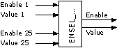

ENSEL_BO：启用选择器布尔值
块 ENSEL_BO (FB454) 作为中央块，允许将 25 个二进制值之一（25 个中的 1 个）选择性互连到特定优先级。
功能性
要将多个二进制值互连到特定优先级，模块 ENSEL_BO 将 25 个二进制输入 [Val1..25] 之一路由到输出 [Value]。

下列conditions申请：
- A binary signal is available at the corresponding value input (Yes/No).
- The corresponding value input [Val1..25] = 0/1 (No/Yes) is enabled by the corresponding enabling pin [En1..25] = 1 (Yes).
- There is no higher-value input [Val1..25] at output [Value].
- If multiple value inputs [Val1..25] are enabled [En1..25], the pin with the lowest number is switched to output [Value].
- Output [InNr] contains an integer number according to the number of the input [Val] routed to output [Value].
- If all enable pins [En1..25] = 0 (No), output [Value] is set to the deafault value [DefVal].
- If the output [Value] represents a valid value, output [Enable] = 1 (Yes).
Function table
Inputs | Outputs | |||
En1..25 (Boolean) | Val1..25 (Boolean) | Enable (Boolean) | Value (Boolean) | InNr (Boolean) |
0（否） | 0（否） | 0（否） | DefVal | 0 |
1（是） | 0（否） | 1（是） | 0（否） | 1 共 25 条 |
0（否） | 1（是） | 0（否） | DefVal | 0 |
1（是） | 1（是） | 1（是） | 1（是） | 1 共 25 条 |
输入
Pin | E | Description |
En1..En25 | pa | 启用 1..25。 |
Val1..Val25 | pa | 值 (1..25)。 |
DefVal | pa | 默认值。 |
输出
Pin | E | Description |
Enable | a | 使能够。 |
Value | a | 价值。 |
InNr | a | 输入号码。 |
输入值
Pin | Description | Data type | Default value | E.g. Engineering unit or Text group | Min. | Max. |
En1..En25 | 启用 1..25。 | 布尔值 | 0（否） | 不，是 |
|
|
Val1..Val25 | 值 (1..25)。 | 布尔值 | 0（关） | 关、开 |
|
|
DefVal | 默认值。 | 布尔值 | 0（关） | 关、开 |
|
|
输出值
Pin | Description | Data type | Default value | E.g. Engineering unit or Text group | Min. | Max. |
Enable | 使能够。 | 布尔值 | 0（否） | 不，是 |
|
|
Value | 代码。 | 布尔值 | 0（关） | 关、开 |
|
|
InNr | 输入号码。 | 整数 | 0 |
|
|
|
工程
如果启用1则 | 值：=值1；启用：=是。 |
elseif 启用 2 then | 值：=值2；启用：=是。 |
elseif 启用 3 then | 值：=值3；启用：=是。 |
... |
|
别的 | 启用：=否。 |
恩迪夫 |
|
过程响应
标准（参见General rules and information).
故障排除
标准（参见General rules and information).